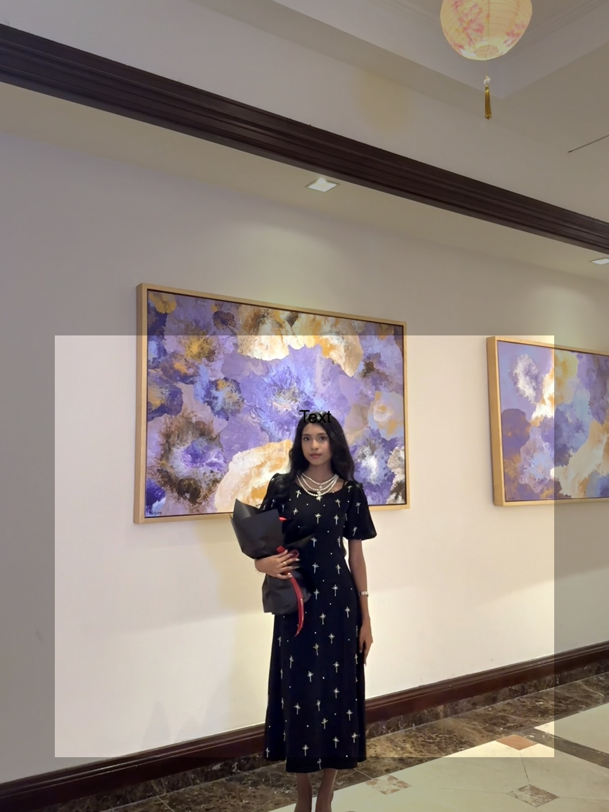

Floral
Aspiring Data Analyst | Computing Science Student
Singapore
I am currently studying Bachelor of Science (Hons) in Computing Science at Coventry University via PSB Academy in Singapore. I completed a Higher Diploma in Infocomm Technology where I developed knowledge in programming, databases and system development.
I am interested in working with data to help organisations make better decisions. My goal is to become a Data Analyst and continue improving my skills in data analysis, database systems, artificial intelligence and machine learning.